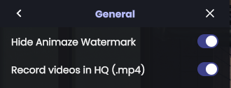
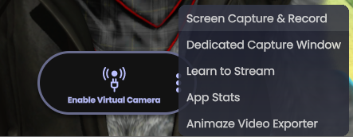
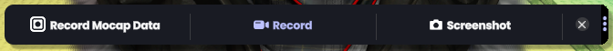

Realtime video recording
Animaze has a real-time video recording function that is suitable for creating small clips or testing out various aspects for lengthier video content.
The video exported is capped at 1280x720 resolution and a max of 30 fps due to performance considerations.
Steps
1. Before starting recording, if you are a subscriber, make sure you set the export video format to .mp4, by going to Settings > General > Record video in HQ (.mp4). This step is not necessary, although it’s recommended.


2. Open “Screen Capture & Record” panel from the burger button on the “Enable Virtual Camera” button

3. Start video recording by clicking the “Record” button on the newly opened panel

4. Stop recording the mocap data when done by clicking the “Stop” button

6. The video should now be saved in the location set at Step 4. The video file will have a name format as VideoRecording_timestamp.mp4 (e.g. VideoRecording_29-04-2022_15-55-27.mp4).